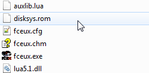
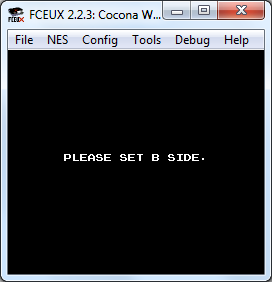
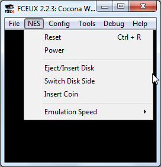
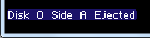
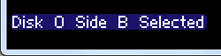
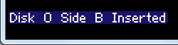
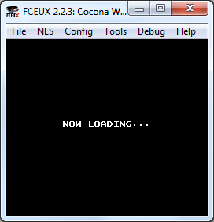
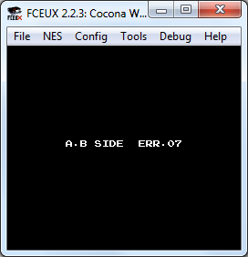

Содержание
Для эмуляции FDS дополнительно требуется BIOS файл с названием disksys.rom. Скачать его можно здесь.
По умолчанию этот файл не входит в комплект эмулятора. Как и в случае с образами игр, распространение файлов BIOS считается не совсем легальным занятием.
Этот файл нужно поместить в корневую папку эмулятора. Без него эмулятор будет выдавать сообщение об ошибке при попытке открыть игру.

На протяжении игры обычно требуется по несколько раз переворачивать стороной эмулируемые диски. По умолчанию диск вставлен стороной A.
Требование вставить диск другой стороной, например, стороной B, выводится самой игрой примерно в таком сообщении.

Действия по диску осуществляются через владку NES. Eject/Insert Disk - вынуть/вставить диск, Switch Disk Side - перевернуть сторону диска.

Для этих команд можно настроить горячие клавиши в Config -> Map Hotkeys -> Filter -> FDS.
Команды работают и во время паузы эмулятора.
Чтобы диск можно было перевернуть, сначала его необходимо вынуть. Выбираешь NES -> Eject Disk. На экране появится сообщение о том, что был вынут диск A.

Теперь переворачиваем диск другой стороной. Выбираешь NES -> Switch Disk Side. Эмулятор сообщит что была выбрана сторона B.

И затем вставляем перевернутый диск назад через NES -> Insert Disk. На экране сообщение о том, что вставлен диск стороной B.

Игра начнет загружать вставленный диск.

Если была выбрана правильная сторона диска, игра продолжится. Если нет, вылезет ошибка.

В этом случае нужно опять вынуть диск, повернуть правильной стороной и вставить назад.